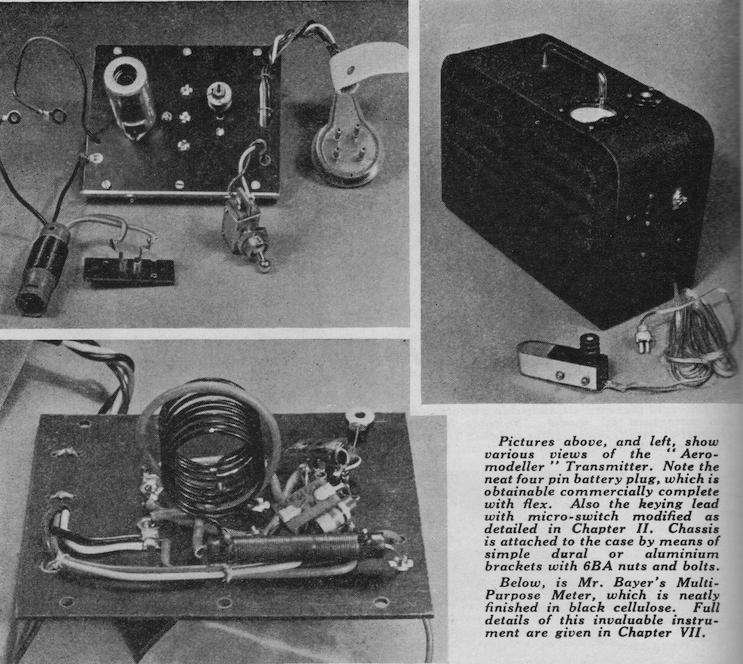

Radio Controlled Aircraft

On my Home page I mentioned that I had ambitions, at the age of 16, to build my own radio control equipment. My intention had been to build one of the designs from 'Simple Radio Control', the 'Aeromodeller Transmitter being the simplest option. You will notice that it uses a single valve and a rather large RF Choke. It also operated at 27MHz and so needed an eight foot (2.44m) quarter-wave monopole aerial! Since it was only a single channel device, it only used the carrier frequency, turning the signal on when the button was pressed, thereby causing the relay on the plane to engage and for the crank to turn to the next stop, turning the rudder left or right depending on the point in the cycle. Releasing the button caused the signal to stop, the relay to disengage and the crank to return the rudder to a neutral position.
Today, RC flyers are spoilt for choice in terms of the transmitters and receivers that they can buy, ready built. Although I might well end up buying a commercial set of equipment, my first inclination was to see what I could build. I was encouraged, early in my research, by finding Dunc's description of what he had done (https://sites.google.com/site/mrdunk/). He clearly has more experience of electronic design than I have, but from his description it was clear that I had a chance of making my own equipment.
However, I had a few requirements for a DIY set of RC equipment:
- There should be two-way communication so that I could return values such as battery state and signal strength from the plane;
- A range of at least 500m should be possible;
- The RF module used should be certified for use in the EU and, in particular, in the UK;
- Communication should use the 2.4GHz ISM frequency range. In the UK, the 2.4GHz band is limited to the frequencies from 2.400 to 2.4835GHz providing up to 80 channels, but with a maximum transmitted power of 100mW rep;
- The RF module should support some means of preventing interference with and by other 2.4GHz units operating nearby. This should preferably be by using Direct Sequence Spread Spectrum (DSSS) techniques;
- Commands need to be sent to the plane every 20 milliseconds and values returned from the plane either at that frequency or slower.
- Due to my limited experience with micro-controllers, the RF module should easily interface to an Arduino.
I didn't really have the experience, or confidence, to build my own board with a micro-controller and the necessary interfaces. The Arduino range provided modules suitable for experimentation and also modules that were stripped down (and light) enough to be used in the plane. They are also widely available and relatively cheap.
My approach to this project was (and still is) to move forward in small steps, proving that I could make each part of the system work before trying to build a complete system. So far these small steps have taken the form of:
- Check that, using an Arduino micro-controller, I could read signals from the type of joystick normally used on an RC transmitter and drive servos;
- Make an Arduino communicate with an RF module using a Serial Peripheral Interface (SPI);
- Initialise the RF module and read the default contents of a register;
- Write values into a register on the RF module;
- Read the default values from a 'register file' on the RF module so that I can read the contents of a received data packet;
- Write a set of values into a 'register file' on the RF module so that I can set the values in a data packet to be sent;
- Cause the RF module to transmit a data packet, even if there is nothing to receive it;
- Cause an RF module to receive a data packet transmitted from another RF module;
- Establish repeated communication (every 20ms) between the ground station and the plane.
Along the way I needed to implement initiation of communication between the two units (commonly referred to as binding) and error recovery. All of the above has been achieved using breadboards to wire the modules together. So the next step is to try to design a layout on strip board so that the connections can be soldered.
I bought a cheap second-hand transmitter from my local model shop and removed one of the sticks. I also bought two second-hand servos. With an Arduino Uno micro controller I was able to use the servo library that is available on the Arduino web site to complete the first test.
My overall design and notes on my approach to the other steps are described on the accompanying pages.